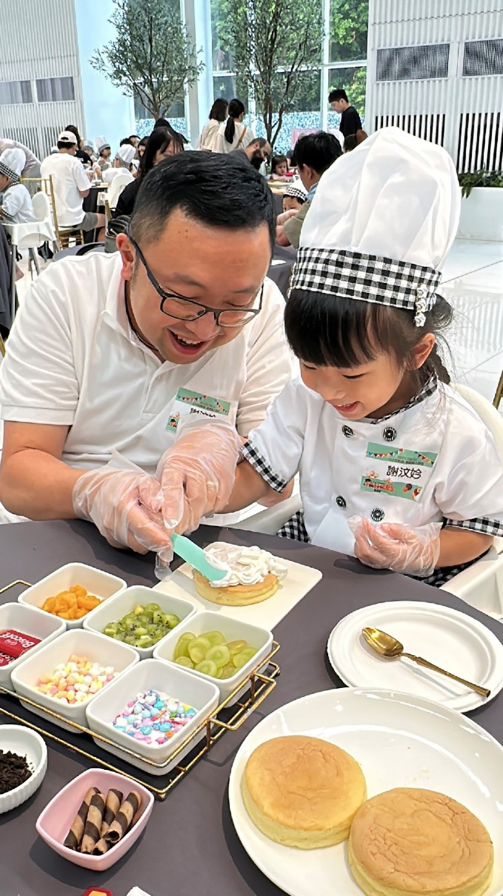

炎炎夏日，我們一家三口決定遠離城市的喧囂，來到位於桃園的Amour阿沐（茂園餐廳），為女兒汶妗規劃一場特別的親子活動。當天早上10點多，我們迫不及待地抵達，阿沐門口那座優雅的旋轉木馬立刻吸引了我們的目光，女兒興奮地爬上木馬，在色彩繽紛的燈光和輕柔的音樂中，留下了許多可愛的照片，臉上充滿了單純的喜悅。
上午11點，我們正式報到。服務人員親切地為汶妗換上了可愛的小小甜點師服，那黑白格紋的圍裙和高高的廚師帽讓她瞬間變身，稚嫩的臉龐上帶著幾分專業的架勢，進入活動場地後，我們享用了一頓簡單卻美味的餐點，為接下來的烘焙之旅補充能量。
活動的高潮，是蛋糕製作環節。在老師的帶領下，每組家庭都領到了所需的材料：三片鬆軟的蛋糕體、香甜滑順的 鮮奶油、色彩鮮豔的水果內餡、酥脆的巧克力脆笛酥、各種造型的餅乾，以及繽紛的彩色巧克力米。
 |
老師細心地講解每一個步驟，從如何均勻地擠上鮮奶油，到如何鋪滿水果內餡，再到如何進行裝飾。我小心翼翼地輔助著汶妗，握著她的小手，一層一層地擠上鮮奶油，讓她親手體驗製作的樂趣。雖然她的動作還有些笨拙，但那份專注的神情卻格外動人。當我們將每一層中間都鋪滿了酸甜的水果內餡時，空氣中瀰漫著奶油與水果交織的香氣。
|  |
最有趣的莫過於蛋糕的裝飾環節。汶妗發揮她的創意，將水果、脆笛酥和彩色巧克力米點綴在蛋糕的最上層，她時而皺眉思考，時而開心地笑著，將心中的美好畫面一點一滴地呈現在蛋糕上。最後，一個充滿我們家庭愛的獨一無二的蛋糕誕生了。
完成蛋糕後，老師為每個小朋友頒發了一張「小小甜點師證書」。當證書交到汶妗手上時，她開心地摀著嘴，眼神裡閃爍著驕傲與滿足的光芒。這張證書不僅僅是對她努力的肯定，更是這段美好回憶的見證。
緊接著，我們來到旁邊的扭蛋機。汶妗興奮地轉動轉盤，一個神祕的轉蛋緩緩滾出，裡面裝著一個可愛的玩具，為這趟旅程增添了一份意外的驚喜。
活動結束後，我們並沒有急著離開。阿沐園區內如童話般的美景，成了我們拍照的最佳背景。我們在蜿蜒的樓梯上、那座充滿異國風情的尖塔造型建築物下，與後方盛開的美麗花朵合影，每一張照片都定格了我們一家三口幸福的瞬間。
這一天，我們不僅親手製作了一個美味的蛋糕，更一起創造了無價的回憶。女兒在活動中展現出的專注與喜悅，是我們身為父母最珍貴的收穫。這場甜點師奇遇記，不僅讓她體驗了動手做的樂趣，也讓我們一家人的心，因為這份共同的甜蜜回憶而更加緊密。